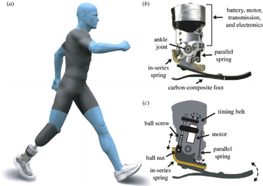
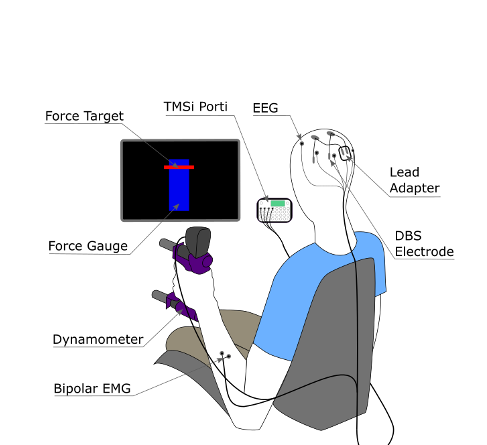
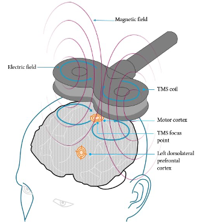

>>>Biomechatronic devices
>>>Multidimensional Learning and Memory
>>>Multidimensional Learning and Memory Modafinil; Ritalin; Transcranial magnetic stimulation
>>>increases life span and "healthspan"
---------------------------------------------------------------------------------------------------------------------------------------------------------------------------
Biomechatronic devices; eg. exoskeletons and orthotics (device made to support injured or deformed body parts), Improve ability to perform physical tasks.
Multidimensional Learning and Memory; Multisensory cues found 131% improvement in recall. eg. “InfoCockpit” (immersive flight simulator), studies show 56% increase of memory.
 
Modafinil; Originally used to treat narcolepsy. Memory, alertness enhancing effects. Ritalin; Developed to treat ADHD. Can improve concentration in healthy adults. Transcranial magnetic stimulation (TMS); Sends magnetic fields to the brain to improve symptoms of depression. May improve motor learning.

Life extension enthusiast favour research into anti-aging and rejuvenation medicine.Slowing "senescence" (deterioration with age, loss of a cell's power to divide and grow.), not only increases life span but also "healthspan". More time to learn and achieve things that you could not in the current human life expectancy.
Made 1 March 2021
thanks to W3C for tutorial and adapted code from Style Examples
also thanks to WDN for HTML and CSS resources and any adapted code snippets from Mozilla Developer Network